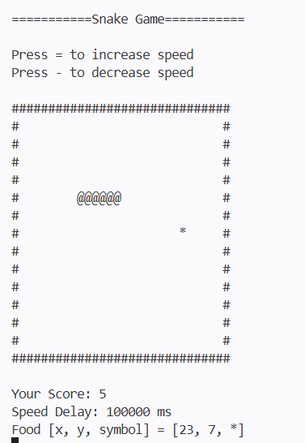
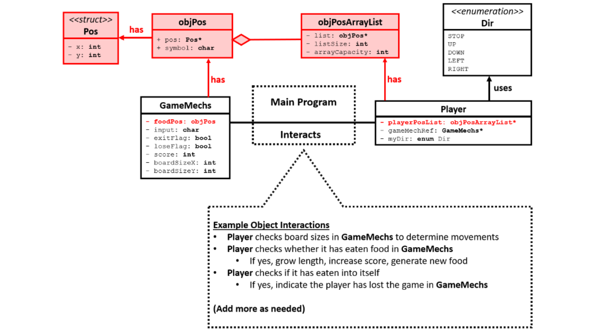

ELECENG 3EY4
C++ OOD Snake Game
My main software project was a two-person object-oriented Snake game built in C++. The project focused on translating foundational programming concepts into a complete interactive system, combining asynchronous input, game-loop logic, finite state machine movement, random item generation, collision detection, score updates, and dynamic memory management within a structured OOD design.
Project snapshot
I built a classic Snake game where the snake moves around the board using four-direction controls, wraps around boundaries, grows after eating food, increases score, and ends when the head collides with the body. The project emphasized modular object interaction rather than procedural code.

Course focus
Object-oriented programming, modular software design, dynamic memory, and interactive game systems.
Main project
A C++ OOD implementation of the classic Snake game using structured object interaction.
Main challenge
Integrating movement, food, growth, score, and collision logic while respecting required OOD design rules.
Final outcome
A complete interactive snake game built with modular classes, list-based body tracking, and memory-aware design.
What I built
The project recreated a classic Snake game in C++ using object-oriented design. Food appears at random valid positions on the board, the snake moves continuously with directional input, wraps around the board edges, grows when food is collected, increments the score, and ends the game when the snake collides with itself. The project had to compile cleanly, avoid memory leaks, and follow the required OOD structure.
How the design was structured
objPos
Represented a single game-board position and symbol. This acted like the smallest building block of the game board, encapsulating coordinate and character information into one reusable object.
objPosArrayList
Provided an ordered list of `objPos` items. In the Snake project, this was especially important for tracking the snake body and supporting operations like head insertion, tail removal, and growth.
GameMechs
Collected the core game state, including input, exit conditions, lose conditions, score, board size, and food position. This kept the game mechanics organized instead of scattering variables globally.
Player
Encapsulated the snake’s movement, direction state, and body tracking. It also handled interactions with the game mechanics object, including food checks, body growth, and self-collision behavior.
How the classes connect
The project follows a layered OOD structure: objPos represents a single board cell, objPosArrayList tracks the snake body as a dynamic array, GameMechs holds game state (score, input, flags), Player owns movement and collision logic, and Food handles random generation avoiding the snake. The UML diagram below shows how these objects interact.

Gameplay features
- Asynchronous keyboard input and game loop updates
- Four-direction snake movement
- Boundary wraparound at the edges of the board
- Random food generation on valid spaces
- Food collision detection
- Snake body growth after eating
- Score tracking
- Game-over detection when the snake collides with itself
- Memory-safe implementation with attention to heap cleanup
What made this project important
This project was more than just “making a game.” It was really about designing a software system with clear object boundaries, reusable data structures, and sustainable logic organization. The project manual specifically emphasized that procedural-style solutions would not be accepted and that the mandatory object design had to be respected.
PPA foundations that led into the Snake project
PPA1 — Program loop and asynchronous input
The course first introduced the structure of a persistent interactive program using initialize, input, logic, drawing, delay, and cleanup stages. That loop structure became the foundation for the final Snake game.
PPA2 — FSM movement and wraparound
PPA2 developed the player movement system using WASD control, direction state, and boundary wraparound. These ideas carried directly into the Snake project’s player movement and directional behavior.
PPA3 — Random items, collision, and updates
PPA3 added random item generation, collision handling, state updates after collection, and heap-based data management. These concepts fed directly into food generation, food consumption, and score updating in Snake.
What I improved most
This project significantly improved my confidence with object-oriented design and dynamic memory in C++. It pushed me to think in terms of object interactions, modular responsibilities, and incremental testing rather than writing one large block of procedural logic.
How I approached development
The project strongly emphasized incremental engineering: validating each feature step by step before adding the next one. That approach was especially important for movement logic, array-list behavior, collision handling, and avoiding memory leaks or runtime failures.
Play the Snake Game
Play a browser version of the game that mirrors the same C++ OOD architecture — same classes, same logic, same FSM-based movement.